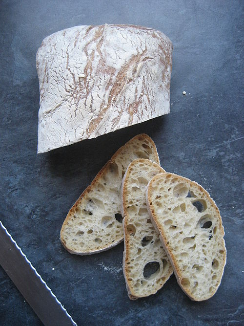

Ciabatta [1] is an Italian white bread made from wheat flour, water, salt, yeast and olive oil, created in 1982 [2][3] by a baker in Adria, province of Rovigo, Veneto, Italy, in response to the popularity of French baguettes.[2][3] Ciabatta is somewhat elongated, broad, and flat, and is baked in many variations, although unique for its alveolar holes. Ciabatta is made with a strong flour and uses a much wetter dough than traditional French bread.[4][3][2] While panino indicates any kind of sandwich regardless of the bread used (whether slices or a bun), a toasted sandwich made from small loaves of ciabatta are known as panini (plural of panino) outside Italy.[5]

Ciabatta bread was introduced to the United Kingdom in 1985 by Marks & Spencer, then to the United States in 1987 by Orlando Bakery, a Cleveland firm.[4][7] Three bakers from Italy went to Orlando Bakery to develop the product for mass production. They successfully introduced a fresh bread, and later a frozen version. It was quickly copied throughout the US. The more open-crumbed form, which is usual in the United States, is made from a very wet dough, often requiring machine-kneading, and a biga or sourdough starter.
Ciabatta bread was first produced in 1982,[2][3] by Arnaldo Cavallari, who called the bread ciabatta polesana after Polesine, the area he lived in. The recipe was subsequently licensed by Cavallari's company, Molini Adriesi, to bakers in 11 countries by 1999. Cavallari and other bakers in Italy were concerned by the popularity of sandwiches made from baguettes imported from France,[2][3] which were endangering their businesses, and so set about trying to create an Italian alternative with which to make sandwiches.[2][3] The recipe for ciabatta came about after several weeks of trying variations of traditional bread recipes and consists of a soft, wet dough made with high gluten flour.[4] Many regions have their own variations on the original recipe or a bread that closely resembles ciabatta and has become accepted as a variety of ciabatta; the ciabatta from the area encompassing Lake Como has a crisp crust, a somewhat soft, porous texture, and is light to the touch. The ciabatta found in Tuscany, Umbria, and Marche varies from bread that has a firm crust and dense crumb to bread that has a crisper crust and more open texture, and in Rome, it is often seasoned with marjoram.[6] New variations of the recipe continue to be developed. Wholemeal ciabatta is known as ciabatta integrale, and when milk is added to the dough, it becomes ciabatta al latte.[6]